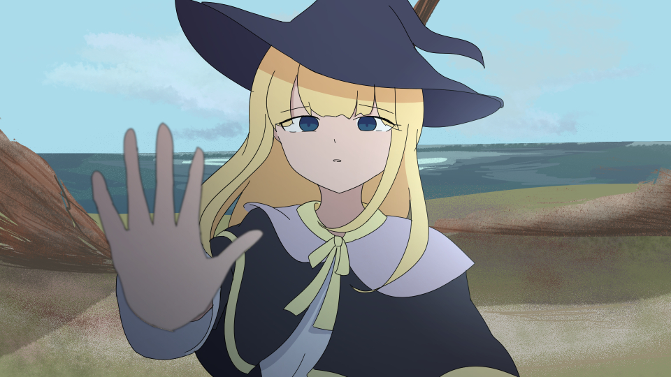

Graduation Thesis · Documentation
The starting point of the thesis: the background that led to the idea, the question it asks, the plan for answering it, and the schedule it was made to.

Explain the context that made you start this project: personal experience, an observation, or existing works and research that you found interesting. Keep it short and specific — one or two paragraphs is enough.
Memories of places are often tied to small, ordinary details — a street corner, a sound, the light at a certain hour. When those places change, the memories that belong to them become harder to hold on to.
State the main question of the thesis in one sentence, then the sub-questions.
Describe how the work was researched and made. The four stages below are a common structure for a practice-based thesis — rename or replace them to fit your own approach.
Reading on memory and place, gathering references, and looking at existing interactive and narrative works.
Collecting personal material — notes, photographs, sketches — and sorting it into themes that could become sections of the work.
Sketching the visual system, then building small interactive prototypes and testing how they feel to use.
Producing the final artwork and interface, then reviewing it with viewers and documenting the response.
Replace the weeks and tasks below with your own schedule.
| Period | Task | Output |
|---|---|---|
| Week 1–3 | Research and reference gathering | Research notes, moodboard |
| Week 4–6 | Concept development and proposal writing | Proposal document |
| Week 7–10 | Visual design and prototyping | Style frames, first prototype |
| Week 11–14 | Production of the final work | Finished interactive piece |
| Week 15–16 | Evaluation, documentation and presentation | Thesis document, this website |
Describe what the final deliverable is and what a viewer should be able to do with it. Mention any supporting materials that are part of the submission.
Draft content — this page is a working structure for the proposal. Replace the headings, sample questions, schedule and references with the real ones.